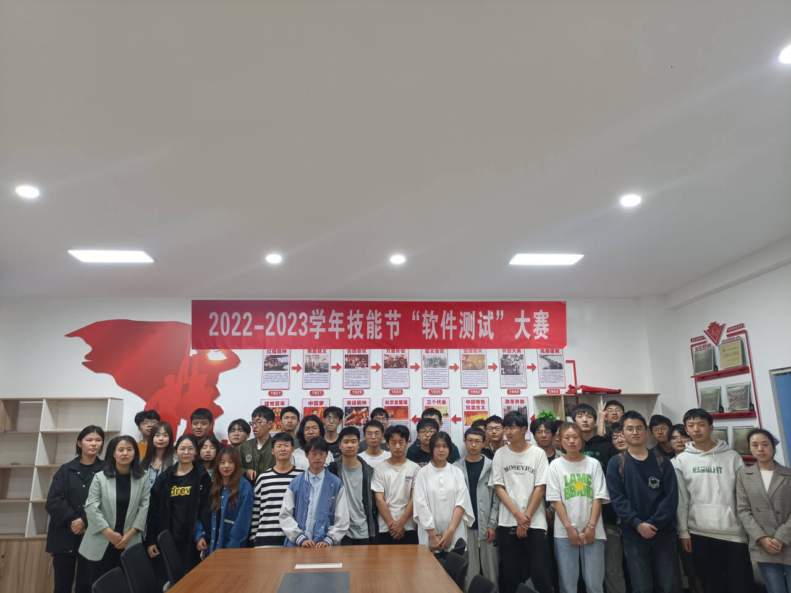
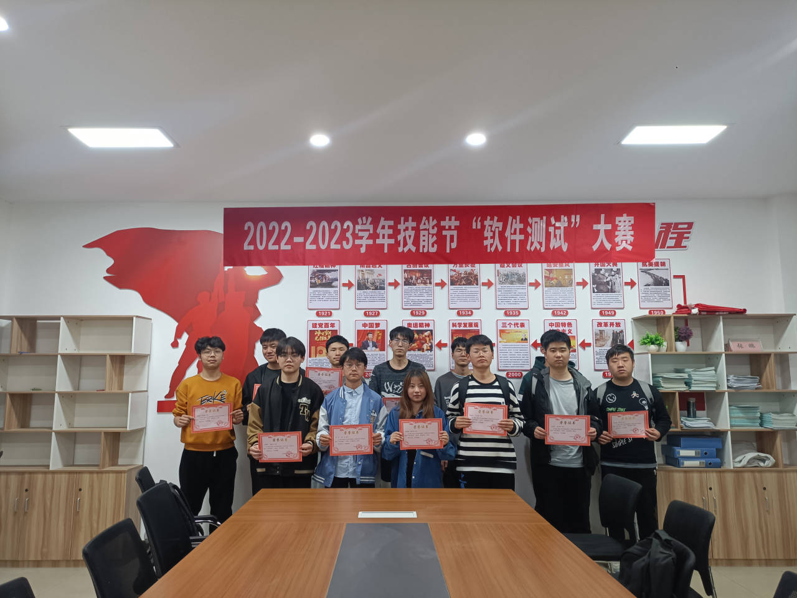
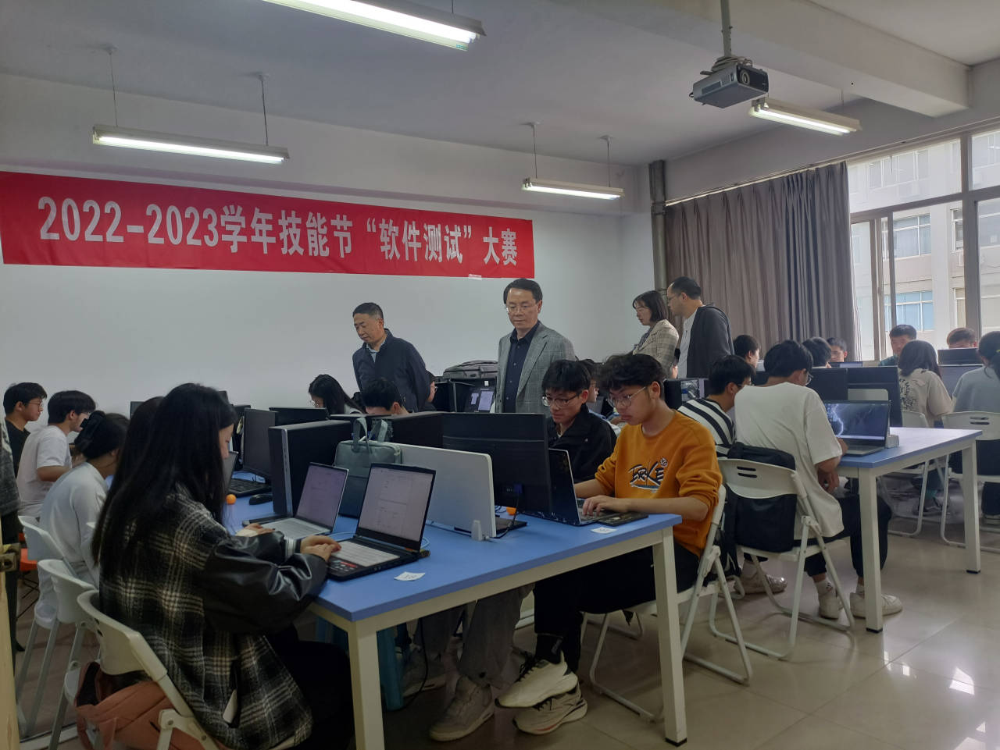
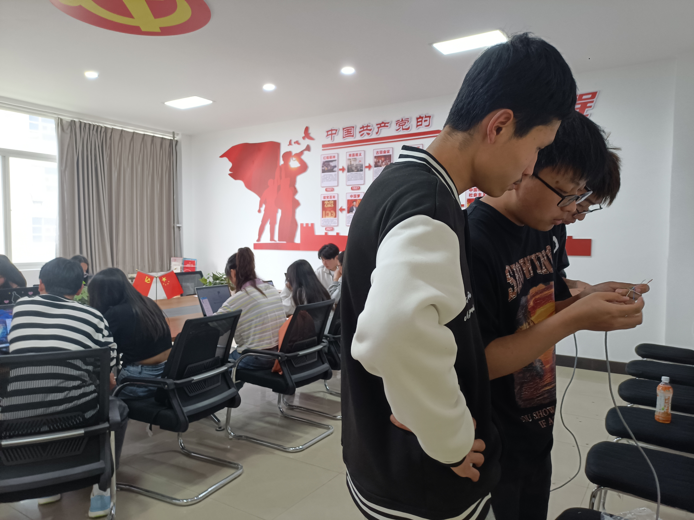
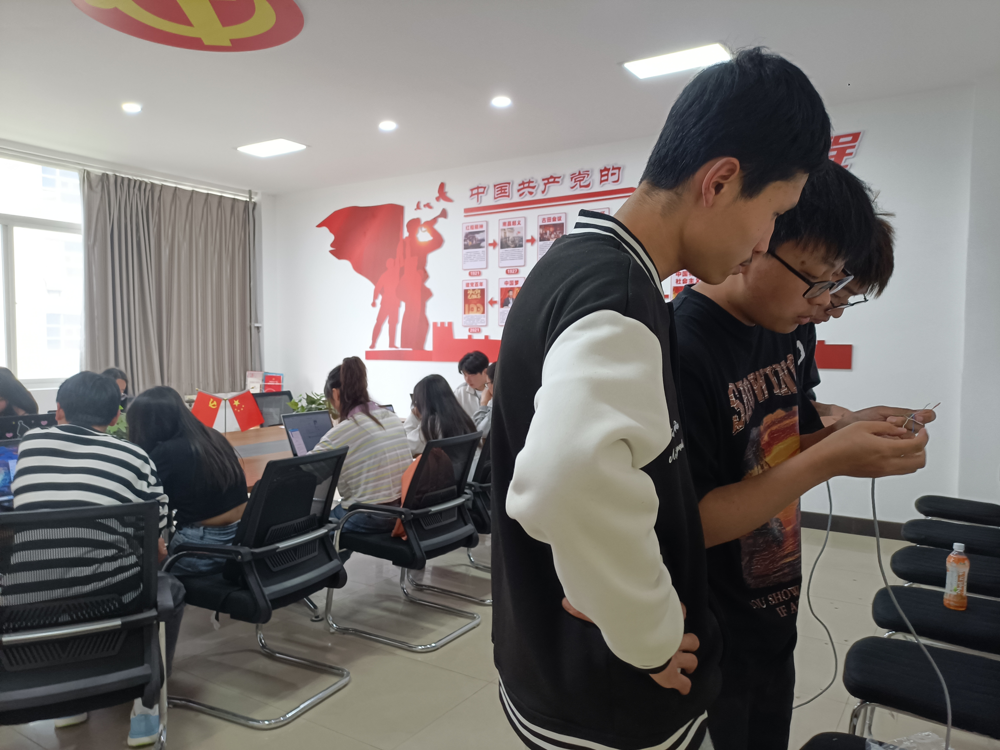
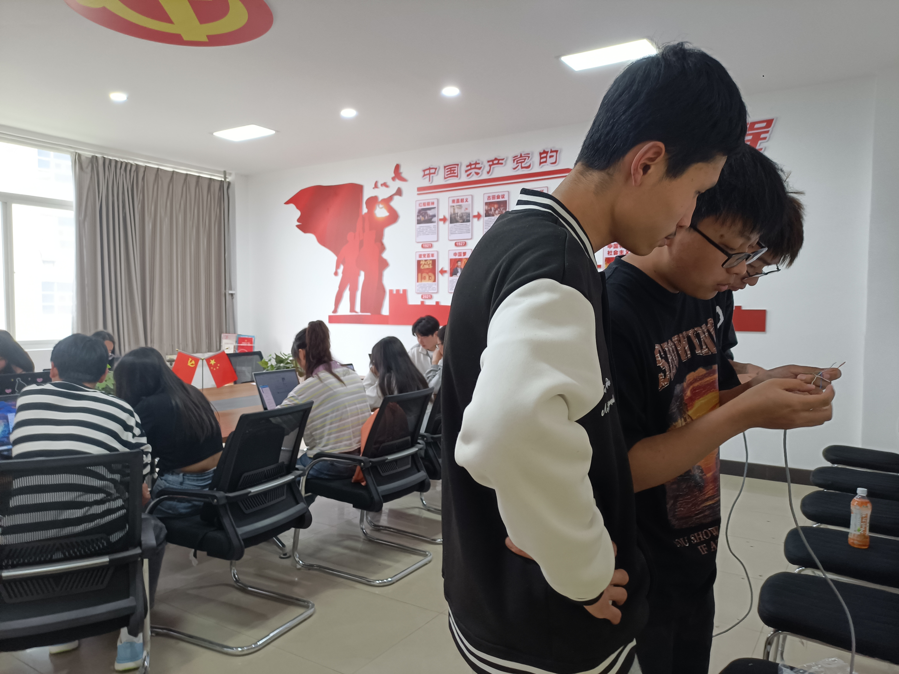
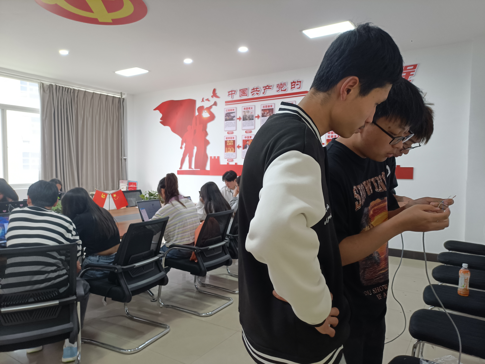

活动
在这里展示协会过去的活动照片和精彩瞬间。




 


软件协会成立于2009年，是由计算机与软件学院专业老师的指导下、有学生组织的专业性院级社团，其性质是学院发起的学术性、学习型社团。 协会的宗旨：配合学院精神文明建设、繁荣校园文化、营造积极向上的学习氛围，同时为同学们提供更多锻炼自己的机会，不断扩大同学们的专业知识面，提高同学们的软件设计与应用的技巧与方法，让软件专业走向社会，走向大众化，让更多的人了解软件技术。 也是广大计算机爱好者与学习者组成的院级学生社团,是培养学生软件开发与创新能力的一个学术科创类协会社团。社团成立的初衷为普及会员们的专业知识,提高会员的应用实践能力,提升会员们的综合素质,调动会员们学习编程与软件开发的积极性,同时,组织会员参加各类省赛、国赛等学科竞赛。 协会开设多门课程,包括Java语言、web前端和初、中级算法、数据结构以及Python语言。协会会配合学校开设的专业课的进度,开展与之相关的编程语言培训,让会员在学会学懂的同时学得更深。
在这里展示协会过去的活动照片和精彩瞬间。

如果对于软件协会有兴趣想要深入了解我们的请扫描以下二维码。（qq群号码：794868198）